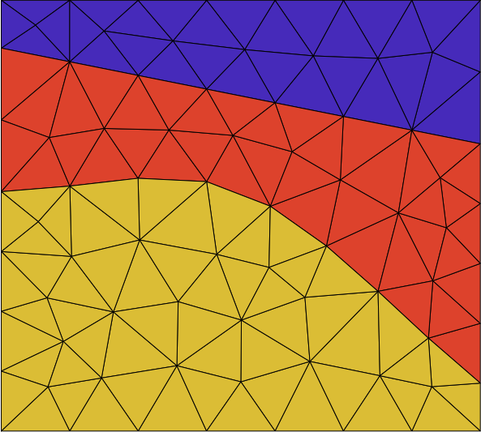

Model discretization¶
ttcrpy supports a number of discretization schemes. 2D and 3D models are possible.
2D models¶
Rectilinear grids and triangular meshes can be built to perform the calculations. By convention, the coordinate axis system is (x, z), e.g. when saving the models to VTK format.
3D models¶
<<<<<<< Updated upstreamRectilinear grids and tetraedral meshes can be used for 3D calculations.
=======Rectilinear grids and tetrahedral meshes can be used for 3D calculations.
>>>>>>> Stashed changesAssigning velocity/slowness¶
Prior to performing traveltime computations, it is necessary to define the slowness distribution in space. Two options are possible.
{kind=link}

In the leftmost case, slowness values are assigned to the cells of the mesh. In the rightmost case, slowness values are assigned to grid nodes. In the latter case, traveltime computation between two nodes is done by taking the average of the slowness values at the two nodes.
<<<<<<< Updated upstream =======The choice mostly depends on the application. For example, in traveltime tomography the problem is to use traveltime data to estimate the slowness model. Rectilinear grids contain less cells than nodes, hence the number of unknown parameters is less if slowness values are assigned to cells. With tetrahedral meshes, the number of nodes is less than the number of cells, and the system to solve will be smaller if slowness values are assignied to the nodes.
>>>>>>> Stashed changes